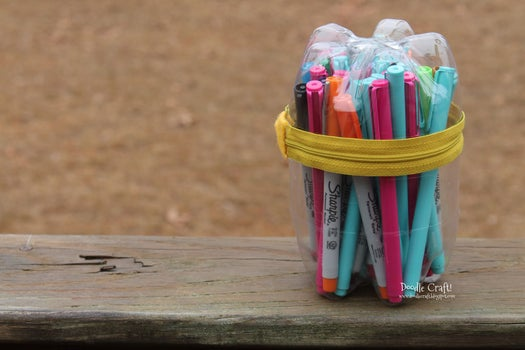
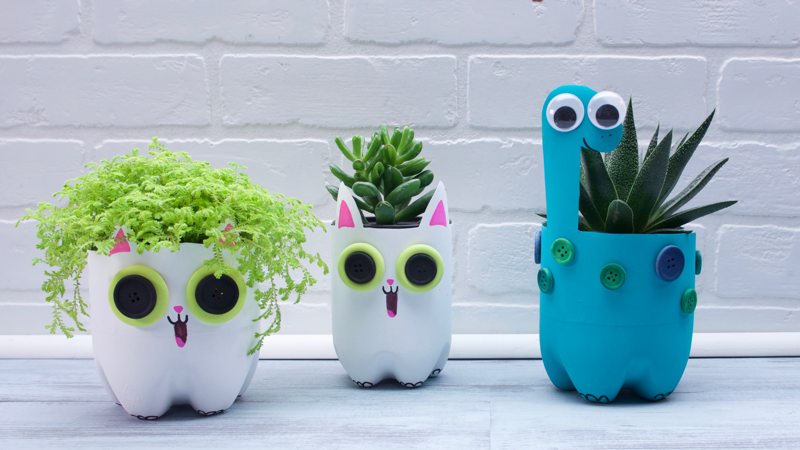
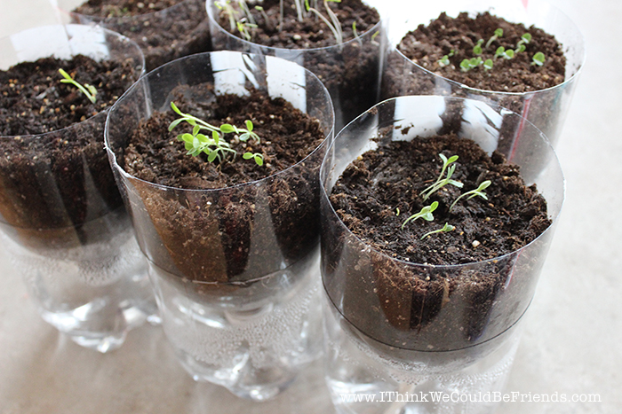

Plastic Bottle Supply Cups

This is a Upcycled Soda Bottle Zippered Pencil Case!
EPA released significant findings on the economic benefits of the
recycling industry with an update to the national Recycling Economic
Information (REI) Study in 2016. This study analyzes the numbers of
jobs, wages and tax revenues attributed to recycling. The study found
that in a single year, recycling and reuse activities in the United
States accounted for: 757,000 jobs, $36.6 billion in wages, and $6.7 billion in tax revenues.
1.You will need the bottoms of 2 soda bottles...same size.
2.I used 2 Liter bottles. Also...you will need a zipper, hot glue/gun and a small piece of felt!
3.Cut them at desired height and wash thoroughly.
4.I cut my tall one at 4" and the short is 2 1/4"...Make sure they are as tall as the things you want to put inside...like pencils, pens or markers!
5.Best way to do it...cut the bottle way higher than desired height and taper down gradually.
5.Once it is cut all around, it's easier to be precise with the measurement.
6.You'll need a colored zipper...bright colors give it a pop!
7.Measure to fit the exact size of the bottle.
8.Hot glue the zipper to the bottle.
9.Hot glue the bottom part of bottle to the top.
10.FILL AND ENJOY
"DON'T BE AFRIAD TO TAKE OUT YOUR SCISSORS AND SAVE SOME MONEY TOO."

This is a Recycled Planter. Even plastic that has been properly thrown in the trash and taken to the landfill can be carried by wind and rain
into the water, and eventually into the ocean. This causes big problems. If a sea turtle sees a plastic bag, it will
mistake it for a jellyfish, its favourite food. When it tries to eat the bag, it will choke. And sea turtles are just
one of the many sea creatures that end up eating plastic: birds and whales do it too. Unlike organic waste, plastic takes
years and years to break down. Even when it does break down, you end up with an ocean full of teeny tiny bits of plastic,
like a huge cloudy plastic soup. These microscopic pieces of plastic are eaten by plankton, which are then eaten by fish,
and so on up the food chain.
1.Cut the bottom third of a 2-liter bottle.
2.Paint the bottle white or the color of your choice.
3.Use parts of the rest of the bottle to cut out ears.
4.Draw a face and other features on the bottle.
5.Fill the bottle with seeds and soil.
"IF WE ALL MAKE CHANGES, WE CAN FIX THIS PROBLEM. MAKE EVERY DAY EARTH DAY!"

This is a Liter Herb Garden. Start an herb garden indoors with a planter that will keep your herbs hydrated and blooming all year long.
Though growing your own vegetables can seem overwhelming to some, it’s actually much simpler than it sounds. Even if you don’t have
a yard, consider starting a patio garden or even an indoor herb garden on a windowsill. You’ll be amazed at how many tomatoes or
peppers you can grow out of one pot! They improve your health, save you money, excersie, and its a natural stress reliver.
1.Rinse a 2-liter soda bottle, remove the label and cut in half with scissors.
2.Cut three 6-inch strands of twine.
3.Tie the twine strands together in a knot about 2 inches from one end, to create a wick.
4.Puncture a 1/2-inch hole into a square of plastic wrap.
5.Thread the twine wick through the plastic wrap hole.
6.Wrap the plastic over the neck of the bottle
7.With the neck of the bottle facing down, fill one-third of the way with soil.
8.Spread out the strands of the twine wick and plant the herb seedlings or seeds.
9.Fill in any gaps with more soil.
10.Add water to the base of bottle.
11.Place the neck of the bottle into the base, so the twine wick can absorb the water.
12.Keep the self-watering planter in an area with plenty of sunlight.
13.Add more water to the base of the planter when you see it needs refilling.
"EVERY SINGLE PERSON ON THIS EARTH HAS THE POWER TO CHANGE THE WORLD."